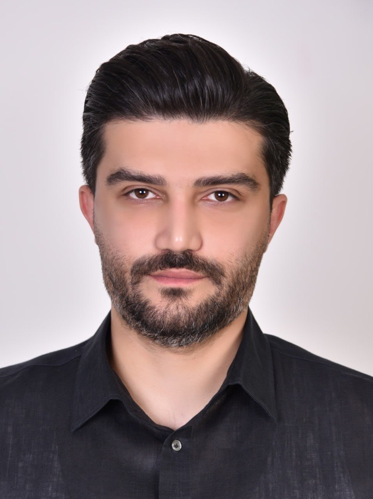

People
Nine researchers, from the lab leader to visiting fellows and PhD researchers.

Leads the lab’s work on corrosion-damaged and ageing structures, seismic resilience and infrastructure asset management. Principal Investigator of the €1.03M Horizon Europe MSCA REVIVE project, and recipient of the ICE John Henry Garrood King Medal 2025.
Future load-carrying capacity of ageing metallic railway bridges.

Real-time structural health monitoring using unsupervised machine learning.

Seismic performance of post-tensioned segmental and demountable structural systems.
Corrosion effects on ageing metallic and reinforced-concrete railway bridges.

Climate-driven degradation of railway earthworks; corrosion effects on RC columns.
Next-generation sustainable and resilient bridge design and construction.

Resilience-based design of composite segmental bridges with low-carbon materials.
